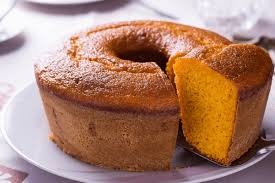

Home
Bolo de Cenoura

Descrição
Bolo de cenoura da vovó
Ingredientes
- 3 cenouras médias (aprox. 360g)
- 4 ovos
- 1 xícara de óleo
- 1 1/2 xícara de açúcar
- 2 xícaras de farinha de trigo
- 1 colher de sopa de fermento
- 1 pitada de sal
Modo de preparo
- Pré aqueça o forno a 180° e unte uma forma de 24cm com farinha e manteiga
- Coloque a farinha, o fermento e o sal numa tigela, passando pela peneira
- Bata no liquidificador os ovos, o óleo, as cenouras em rodelas e o açúcar, por cerca de 5 minutos
- Tranfira a mistura líquida para uma tigela grande e adicione aos poucos os ingredientes secos
- Adicione a massa na forma e asse por cerca de 40 a 50 minutos